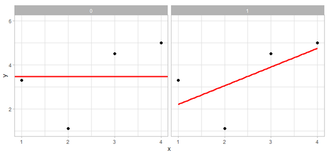
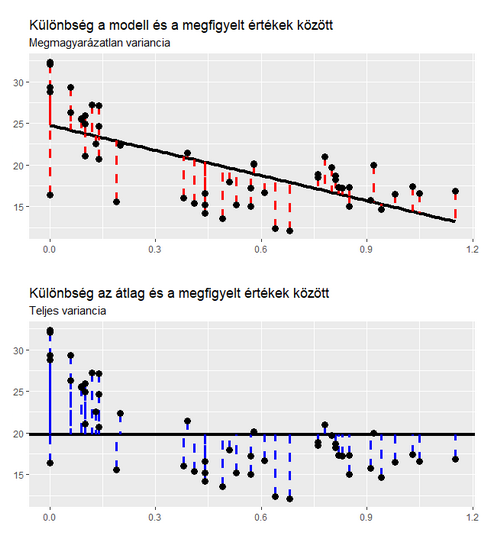
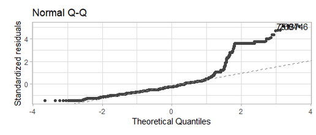
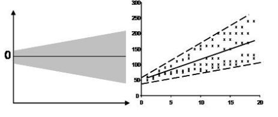

8 Lineáris regresszió
8.1 Egyszerű lineáris regresszió
Legsokrétűbb statisztikai próba
A legtöbb más statisztikai próbát regresszióként is lehet értelmezni
Célja: a kimeneti változó értékeinek predikciója egy (vagy több) prediktor változó által
Adat = model + error
- Lineáris regresszió esetében a modellünk egy egyenes vonal
- A modell a bemeneti változó függvényében ad előrejelzést
- Ha ismerjük a prediktor értékét, akkor meg tudjuk mondani mi lesz a kimeneti változó értéke
Azt a lineáris modellt akarjuk megtalálni, ami legjobban illeszkedik az adatokra, ahol legkisebb a hiba
8.1.1 Lineáris modell paraméterei
Másnéven regressziós együtthatók (regression coefficients)
Meredekség (slope): egy egységnyi változás a prediktor változóban (x tengely) mekkora változást okoz a kimeneti változóban (y tengely)
Az egyenes dőlésszöge
Ha pozitív érték, akkor pozitív kapcsolat van a két változó között
- Ha a prediktor változónk értéke nő a kimeneti változó értéke is nő
Ha negatív érték, akkor negatív kapcsolat
- Ha a prediktor változónk értéke nő, a kimeneti változónk értéke csökken
Jele: b1
Intercept: ha a prediktor változó értéke 0, mekkora a kimeneti változó értéke, azaz milyen y értéknél metszi a vonal az y tengelyt
- Jele: b0
Hibatag: a modell által meg nem magyarázott variancia
- Az adatoponttól a lineáris regressziós egyenesig húzott szaggatott vonal
8.1.2 Lineáris modell illeszkedésének a vizsgálata
- Hogyan találjuk meg azt a lineáris modellt, ami legjobban illeszkedik az adatokra?
8.1.2.1 A legkisebb négyzetek módszere (method of least squares)
Meghatározásához ugyanazt a módszert használhatjuk, mint amikor az átlag modellnél használtunk
Megnézzük a modell által prediktált értékek és a valós értékek közötti különbséget: a reziduálisokat (residuals)
Itt is négyzetre emeljük a reziduálisok majd összeadjuk őket (sum of squared differences, SS)
Ezután minden lehetséges vonalra (lineáris regressziós modellre) kiszámíthatnánk őket és ahol az SS a legkisebb az a modell illeszkedik a legjobban az adatokra
Azonban még a legjobban illeszkedő modell is magyarázhatja rosszul az adatokat!
8.1.2.2 A null modell
Ahhoz, hogy ezt megvizsgálájuk a legegyszerűbb (null) modell illeszkedéséhez hasonlítjuk a regressziós modellunk illeszkedését: az átlaghoz
Az átlag azonban minden adatpontra ugyanazt az értéket fogja prediktálni
Például: mennyire számít a marketingre szánt összeg egy film összbevételénél?
- Ha 1 dollárt költünk a marketingre akkor is ugyanazt a bevétlet prediktálja, mintha 200000$ költüttünk volna rá
Az átlag modellnél a hibát összesítve megkapjuk a teljes négyzetösszeget (total sum of squares, SST)
- Miért az átlag a legegyszerűbb modell?
- Bármelyik másik értéket választjuk a legegyszerűbb modellhez, a hibák négyzetösszege (sum of squared residuals) minden esetben nagyobb lesz, mintha az átlag értékét választanánk
- Miért az átlag a legegyszerűbb modell?
8.1.2.3 Regressziós modell összehasonlítása a null modellel
Kiszámítjuk a négyzetre emelt reziduálisok összegét a regressziós modellnél is (residual sum of squares, SSR)
Ahhoz, hogy megtudjuk a regressziós modellünk mennyivel jobban magyarázza az adatokat, mint az átlag modellunk a kettőt kivonjuk egymásból: SST - SSR = SSM (model sum of squares)
Úgy tudunk javítani a modellünkön, ha közelebb kerülnek a modell által prediktált értékek az egyes adatpontokhoz (lásd: Figure 8.1)
- Így csökken a modell által prediktált értékek és az adatok közti különbség, tehát a reziduálisok nagysága
Ha az SSM nagy, a regressziós modell sokkal jobban magyarázza az adatokat, mint az átlag
A fennmaradó variancia (amit a modell nem tud megmagyarázni) a megmagyarázatlan variancia
Megnézhetjük, hogy arányosan mennyivel javul a modellünk az átlaghoz képest, ha egy prediktor változót is belerakunk
A kettőt elosztva egymással és kivonva egyből megkapjuk a determinisztikus együtthatót R2
- 1 - SSM / SST
Megmutatja a regressziós modellünk által megmagyarázott variancia arányát a kimeneti változónkban, a teljes varianciához képest (lásd: Figure 8.2)
0 és 1 közötti értéket vehet fel
Minél nagyobb az érték a modellünk az adatokban található variancia annál nagyobb százalékát magyarázza meg, tehát annál jobb
Ha megszorozzuk 100-al százalékot kapunk
A kimeneti változóban lévő varianciának hány százalékát magyarázza meg a modell
Ha ennek a négyzetgyökét vesszük, akkor megkapjuk a Pearson korrelációs együtthatót!

Az F-teszttel is megvizsgálhatjuk a modellünk illeszkedését
F teszt statisztika: szisztematikus variancia / nem szisztematikus variancia
- A modell okozta javulás (SSM) / a modell és a megfigyel adatok között lévő különbség (SSR)
Másszóval az F teszt statisztika megmondja, hogy a modell mennyire javítja a becslésünk pontosságát a modellben található pontatlansághoz képest
Itt nem a négyzetes különbségek összegével, hanem átlagával dolgozunk
- Így nem függ a megfigyelések számától
Mean squares for the model (MSS)
- Szabadságfok: prediktor változók száma
Residuals mean square (MSR)
- Szabadságfok: megfigyelések száma - béta együtthatók száma (meredség + intercept = 2)
Jó modellnél 1-nél nagyobb az F arány
p-értéket vagy konfidencia intervallumot is ki tudunk hozzá számolni
8.1.3 Prediktor változók szignifikanciájának vizsgálata
Nemcsak a teljes modell teljesítményét kell megvizsgálnunk, hanem az egyes paramétereknek a szignifikanciáját is
A béta megmutatja, hogy a prediktorban való egy egységnyi változás mekkora változást okoz a kimeneti változóban
Ha a modell rossz, azt várjuk el, hogy ez nulla legyen
- Pont, mint az átlagnál!
A nullhipotézis a paraméterek esetén az lesz, h a paraméter nem különbözik a nullától
A kritikus érték pedig a paraméter tényleges értéke
Ezekre gyakorlatilag egy egymintás t-próbát fogunk végezni
- t = béta / SE
Az intercept esetén, hogy különbözik-e a nullától az érték.
A slope esetén, hogy a dőlésszöge különbözik-e a nullától.
8.2 Lineáris regresszió előfeltételei
A kimeneti változó folytonos azaz legalább intervallum mérési szintű
Prediktor típusok: folytonos vagy kategorikus is lehet
Nem zéró variancia: a kimeneti változó és prediktor értékeiben van variabilitás
A megfigyelések egymástól függetlenek
A reziduálisok eloszlása normális (a prediktor eloszlásának nem kell normálisnak lennie!)
Vizuálisan:
QQ plot
A pontok maradjanak az átló közelében
Az esetek 5%-a lehet 2 szóráson kívül
Az esetek 1%-a lehet 2.5 szóráson kívül
Az esetek 0.1%-a lehet 3 szóráson kívül
A Figure 8.3 ábrán egy olyan QQ plot látható, ami azt mutatja, hogy a vizsgált regressziós modell esetében a reziduálisok eloszlása eltér a normálistól
Residual vs fitted values
Residuális értékek vannak az y tengelyen
Modell értékek az x tengelyen
Ha a vonal görbül, nem lineáris kapcsolat

Az értékek
68%-a egy szóráson belül van
95%-a két szóráson belül van
99.7%-a három szóráson belül van
Ehhez kapcsolódik, hogy a modellben nincsen sok jelentős kiugró érték (outlier), ami torzítja a modellünket
Azt várjuk, hogy a lineáris regresszió minden mérési szinten ugyanannyira jó predikciót tudjon adni. Azaz, ugyanolyan hatékony legyen akkor, ha a buszmegállóban 3 ember van, mint akkor, ha 20
Ezt a reziduálisok elemzésével tudjuk ellenőrizni
Ekkor azt mondjuk, hogy a modellünk homoszkedasztikus, azaz a reziduálisok mértéke független a prediktor értékétől.
Ellentéte a heteroszkedaszticitás, ami azt jelenti, hogy pl. a kisebb prediktált értékekhez tartozó reziduálisok kisebbek, mint a nagyobb prediktált értékekhez tartozó reziduálisok
Vizsgálata vizuálisan zajlik
- Tölcsér alak azt jelenti hogy sérül a heteroszkedaszticitás feltétle (lásd: Figure 8.4)
A kimeneti vagy prediktor változók transzformálása segíthet a reziduálisok homoszkedaszticitásának sérülése során. Ilyen lehet például a természetes logaritmikus transzformáció
Ilyenkor figyelnünk kell az eredmények értelmezésére, hiszen a változók transzformálásával az is megváltozik
Ha a prediktornak vesszük természetes logarimtusát: 1%-os változás a prediktor változóban a kimeneti változó 0.01*B1 változásához vezet
Ha a prediktornak és a kimeneti változónak is a természetes logaritmusát vesszük: 1%-os változás a prediktor változóban B1%-os változáshoz vezet a kimeneti változóban

Kiugró értékek szűrése
A kiugró értékek “magukhoz húzzák” a regressziós egyenest (lásd: Figure 8.5)
Vizuálisan
Távol esnek a többi értéktől
Magukhoz húzzák a regressziós egyenest
Statisztikai módszerekkel
Cook’s distance
Ha 1-nél nagyobb erős torzító hatása van az adatpontnak
Mit tegyünk ha vannak outlierek?
Csak akkor zárjuk ki ha adathibából származnak
Különben overfitting veszélye fennáll
Nagy elemszánál nem olyan nagy a hatásuk!
8.3 Többszörös lineáris regresszió
További tényezőkről is gondolhatjuk, hogy javítani fognak a modellünkön
Egy bizonyos pont után, ha ezeket a prediktor változókat hozzáadjuk a modellhez, nem fog a hiba szignifikánsan csökkenni
Ez az overfitting
Eredménye: a modell nem lesz generalizálható